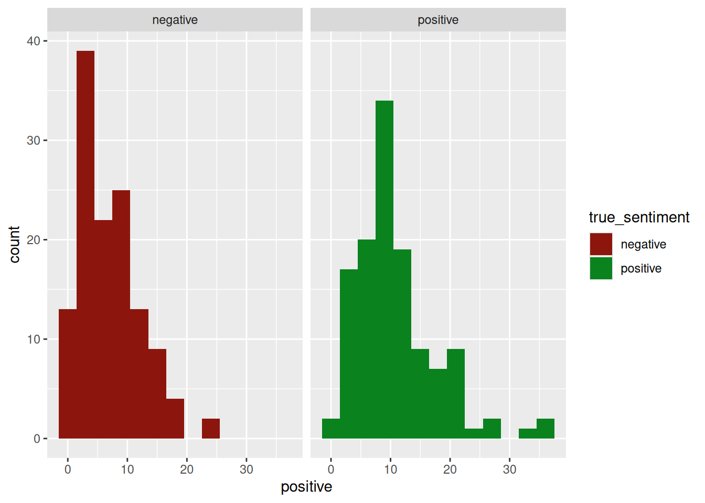
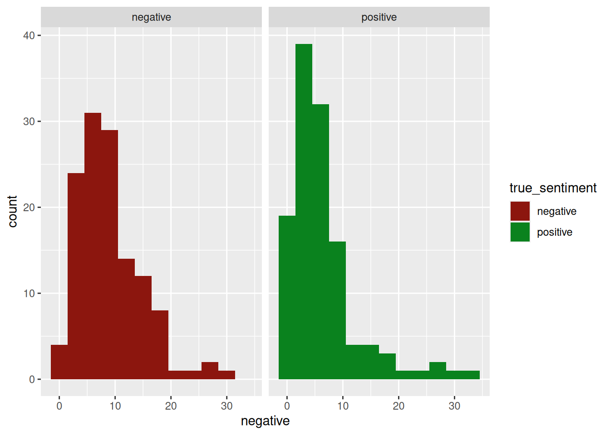
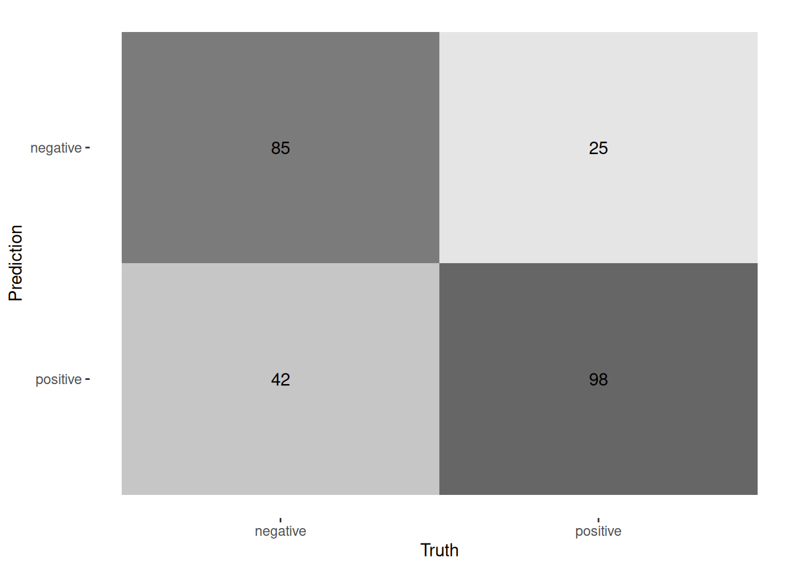
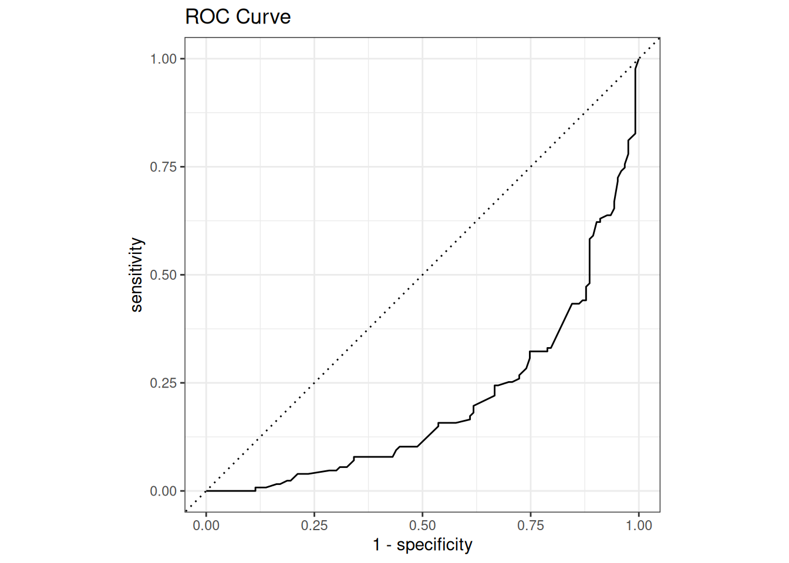

imdb_clean <- imdb |>
mutate(id = row_number()) |>
mutate(review = str_replace_all(review, "https?://.+", "")) |>
mutate(review = str_replace_all(review, "<.*?>", "")) |>
mutate(review = str_replace_all(review, "[^\x01-\x7F]", "")) |>
mutate(true_sentiment = as.factor(sentiment)) |>
select(-sentiment) |>
filter(tokenizers::count_words(review) < 500) |>
filter(tokenizers::count_words(review) > 20)RegEx
We as humans can easily determine if someone is saying something positive or negative, but computers and algorithms have struggled with this for decades. The context and sarcasm is not easily discernible to a computer. I will be attempting to predict the sentiment from movie reviews on IMDB.
The dataset IMDB Reviews contains reviews from the IMDB website and the sentiment towards that specific movie review. There is an exactly 50/50 split between positive sentiment and negative sentiment. I previously used this dataset for a Machine learning project using Long Short Term Memory. Using ML I was able to get a 88.8% accuracy in correctly identifying the sentiment. One major flaw with this dataset is the accuracy of the data. There are many examples where it says that the review has negative sentiment, but is actually a positive review. A better dataset would have their actual star rating system which the user would input and would not be up for interpretation.
Cleaning the imdb dataset includes removing links, html tags, and special characters. We will also filter out reviews with more than 500 words and less than 20 words. It is only filtering out around 4000 reviews which is not a significant portion of the whole dataset.
First we will take a smaller sample from the entire imdb_clean which will be easier to determine if the code will function correctly.
imdb_small <- slice_sample(imdb_clean, n = 250) |>
mutate(id = row_number()) |>
select(id, review, true_sentiment)
imdb_small |>
group_by(true_sentiment) |>
summarize(n = n())# A tibble: 2 × 2
true_sentiment n
<fct> <int>
1 negative 116
2 positive 134The Bing Sentiments include a tibble of 6,786 words with sentiment associated with them. These words will be joined with the reviews and
bing_sentiment <- get_sentiments("bing")
tokenized <- imdb_small |>
select(-true_sentiment) |>
mutate(id = row_number(),
review = as.character(review)) |>
unnest_tokens(word, review)
sentiment_count <- tokenized |>
inner_join(bing_sentiment, by = "word") |>
group_by(id, sentiment) |>
summarize(count = n()) |>
pivot_wider(names_from = sentiment, values_from = count, values_fill = 0)
result <- left_join(imdb_small, sentiment_count, by = "id") |>
mutate(pred_sentiment = as.factor(ifelse(positive > negative, "positive", "negative"))) |>
mutate(pred_val = positive / (positive + negative)) |>
select(review, true_sentiment, pred_sentiment, pred_val, positive, negative)The first histogram shows the true positive and true negative sentiments and their distribution of positive sentiment words. The second histogram shows the true positive and true negative sentiments and their distribution of negative sentiment words. All of the distributions look relatively the same.
ggplot(result, aes(x = positive, fill = true_sentiment))+
geom_histogram(binwidth = 3)+
facet_wrap(~true_sentiment)+
scale_fill_manual(values = c("positive" = "#0a821e", "negative" = "#8c160e"))
ggplot(result, aes(x = negative, fill = true_sentiment))+
geom_histogram(binwidth = 3)+
facet_wrap(~true_sentiment)+
scale_fill_manual(values = c("positive" = "#0a821e", "negative" = "#8c160e"))
The results will vary due to the sampling of imdb_clean rows. However, most of the time we can see that this model performs slightly better than just guessing what the sentiment is.
result |>
conf_mat(true_sentiment, pred_sentiment) |>
autoplot(type = "heatmap")
result |>
accuracy(true_sentiment, pred_sentiment) |>
pull(.estimate) |>
cat("accuracy")0.74 accuracyresult |>
specificity(true_sentiment, pred_sentiment) |>
pull(.estimate) |>
cat("specificity")0.761194 specificityresult |>
sensitivity(true_sentiment, pred_sentiment) |>
pull(.estimate) |>
cat("sensitivity")0.7155172 sensitivityThe ROC curve shows us the relationship between specificity and sensitivity. The ideal situation is to have the highest sensitivity and specificity.
result |>
roc_curve(true_sentiment, pred_val) |>
autoplot()+
labs(title = "ROC Curve")
This code is the same as imdb_small, except for the filtering of na values at the end. I am assume this would be where there are no words in the review that match any of the bing_sentiment words.
tokenized <- imdb_clean |>
select(-true_sentiment) |>
mutate(id = row_number(),
review = as.character(review)) |>
unnest_tokens(word, review)
sentiment_count <- tokenized |>
inner_join(bing_sentiment, by = "word") |>
group_by(id, sentiment) |>
summarize(count = n()) |>
pivot_wider(names_from = sentiment, values_from = count, values_fill = 0)
result_full <- left_join(imdb_clean, sentiment_count, by = "id") |>
mutate(pred_sentiment = as.factor(ifelse(positive > negative, "positive", "negative"))) |>
filter(!is.na(pred_sentiment)) |>
mutate(pred_val = positive / (positive + negative)) |>
select(review, true_sentiment, pred_sentiment, pred_val, positive, negative)The histograms show the same outcomes as the imdb_small version, but the distributions look even closer to being the same.
ggplot(result_full, aes(x = positive, fill = true_sentiment))+
geom_histogram(binwidth = 5)+
facet_wrap(~true_sentiment)+
scale_fill_manual(values = c("positive" = "#0a821e", "negative" = "#8c160e"))ggplot(result_full, aes(x = negative, fill = true_sentiment))+
geom_histogram(binwidth = 5)+
facet_wrap(~true_sentiment)+
scale_fill_manual(values = c("positive" = "#0a821e", "negative" = "#8c160e"))As we can see from the confusion matrix and the accuracy, the model is not very good at predicting the sentiment of the reviews. The accuracy is 0.5 which is the same as a coin flip. It would be the same as guessing. This is to be expected since context matters much more than the individual words. This is why Machine Learning Models do better with text data that linear models or just counting words.
result_full |>
conf_mat(true_sentiment, pred_sentiment) |>
autoplot(type = "heatmap")result_full |>
accuracy(true_sentiment, pred_sentiment) |>
pull(.estimate) |>
cat("accuracy")0.4998 accuracyresult_full |>
specificity(true_sentiment, pred_sentiment) |>
pull(.estimate) |>
cat("specificity")0.5188657 specificityresult_full |>
sensitivity(true_sentiment, pred_sentiment) |>
pull(.estimate) |>
cat("sensitivity")0.4809617 sensitivityThe ROC curve also confirms how terrible this model is for classification of sentiment in a large dataset setting. The sensitivity and specificity are both around 50%, which is why we are see a straight line for the ROC curve.
result_full |>
roc_curve(true_sentiment, pred_val) |>
autoplot()+
labs(title = "ROC Curve")Overall this method of sentiment binary classification is not a good method. The Machine Learning Model performs significantly better than purly counting the number of positive and negative sentimental words.